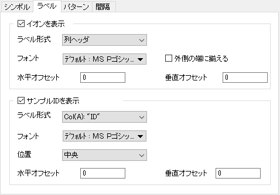

このタブを使用して、シュティフダイアグラムのすべての種類のラベルを制御できます。

イオンのラベル表示を設定します。
イオン名として表示する列ラベル行を指定します。Na⁺とK⁺、HCO₃⁻とCO₃⁻などの結合イオンをプロットするノードがある場合、ノードにNa⁺ + K⁺、HCO₃⁻ + CO₃⁻として表示します。
タイトルテキストのフォントとフォーマットを指定します。
ラベルを外側の端に揃えて表示するか指定します。
デフォルトで、カチオンのラベル位置はシンボルの左側、アニオンのラベル位置はシンボルの右側です。このコントロールにチェックを付けると、カチオンのラベルを左に揃え、アニオンのラベルを右に揃えます。
ポリゴンのノード（シンボル）からのラベルの水平オフセットを指定します。このコントロールの単位はフォントの高さの％です。
ポリゴンのノード（シンボル）からのラベルの垂直オフセットを指定します。このコントロールの単位はフォントの高さの％です。
サンプルIDのラベル表示を設定します。
作図時にplotstiffダイアログでサンプルIDを指定していない場合はこのグループは利用できません。このチェックボックスにチェックを付ケルト、サンプルID列からラベルを付けることができます。
ポリゴンのサンプルIDとして適用する列を指定します。
目盛ラベルのフォントと一般フォーマットを指定します。
サンプルIDのラベル位置を指定します。
サンプルIDラベルの設定した位置からの水平オフセットを指定します。このコントロールの単位はフォントの高さの％です。
サンプルIDラベルの設定した位置からの垂直オフセットを指定します。このコントロールの単位はフォントの高さの％です。